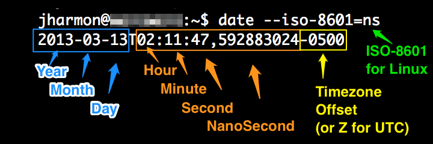

YASBIL View Local Data (before sync)
Data shown in this page will be deleted 7 days after syncing to server ('Synced' columns)
All Times are in ISO Format:
(Image Courtesy:
API UX):

yasbil_sessions
| Session ID | Start Time | End Time | Platform | Browser | Synced |
|---|
yasbil_session_pagevisits
| Session ID | Time | Event | Page Title + URL | Transition | Search Engine: Search Query | Synced |
|---|
yasbil_session_mouse
| Session ID | Time | URL | Event Dur |
Dimensions | Locations | Event Target | Synced |
|---|
yasbil_session_webnav
| Session ID | Time | URL | Event | Frame | Transition | Synced |
|---|